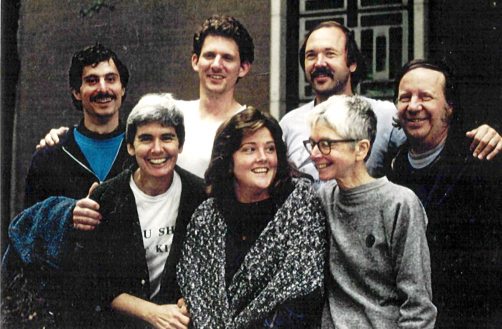
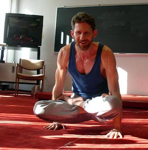

About Me
Hello, I’m Homer! I’m a professor of Mathematics and Computer Science, and I’m the instructor for CSC 324.
Early Life
I’m a Southerner, born in Georgia and raised in Durham, North Carolina. From an early age I was interested in science and mathematics, and discovered philosophy at age twelve, reading first some of the dialogues of Plato and then moving on to Freiderich Nietzche. I doubt that at the time I understood much of Nietzche beyond Thus Spake Zarathustra, but these early encounters with philosophers awoke in me a great central, guiding Question:
How does the Universe work, at its most fundamental levels?
Studies
I went up North for College, majoring in Philosopy at Princeton University. My great loves were mathematical logic, the foundations of mathematics, metaphysics and Ancient Philosophy, especially Aristotle. The professor to whom I felt closest was the late Michael Frede.
For my graduate studies I turned to Mathematics, taking a PhD at the University of North Carolina at Chapel Hill, not far from where I grew up. I worked in ergodic theory, which is more or less the study of the long-run orderly properties of dynamical systems that might appear quite chaotic and unpredictable in the short run. Along the way I became acquainted with the writings of the great Roman Catholic monk and author Thomas Merton, who lived at the Abby of Gethsamani in Kentucky, about an hour’s drive West of Georgetown College. Under the influence of Merton my Question shifted from “How does the Universe work at its most fundamental levels?” to:
How might we experience God, not in some future life but here and now, and not just personally but also in community?
Putting Things Into Practice
I became active in the Catholic Worker Movement, a loose network of houses of hospitality all over the country that are devoted to voluntary poverty, service of the poor, and action for peace and social justice. One of their founders was Dorothy Day, a mentor of Thomas Merton. She was also a prominent author. If you get a chance, read her autobiography The Long Loneliness.
During that time I was also involved, through the Catholic Worker, with the Plowshares Movement, taking part in numerous demonstrations against the nuclear arms race, spending a fair amount of time—during extended breaks from my mathematical studies—in prison for civil disobedience. I was mamber of the Thames River Plowshares. To the left is a picture taken of us a few weeks after our action, which took place on September 2, 1989. At that time I was twenty-seven years old and newly-married.
A couple of years later I finished my doctorate in Mathematics. My wife and I considered staying in North Carolina to help found a Catholic Worker House there, but eventually we decided that I should make use of my studies and teach Mathematics. In 1991 I took a position at Pikeville College in Eastern Kentucky, not far from where my grandparents had worked as coal miners. In 1996 we moved to Georgetown College.
Life At Georgetown
At Georgetown I have pursued the history of mathematics, statistics and, of course, computer programming, especially for data analysis. The history of mathematics, along with an interest—inspired by Thomas Merton—in Asian religions, led me to the study of Sanskrit, the scholarly classical language of India.
Somewhat in connection with my studies in Sanskrit and my reading of Thomas Merton, I am a long-time practitioner of Ashtanga Yoga; in fact I taught it several times as a KHS activity class at Georgetown. To the right is an old picture of me teaching one of those classes. I appear to be coming down out of the posture known as utpluthihi, and offering advice to some students out of the camera to my right. In addition to Ashtanga Yoga I enjoy weight-lifting and working in our backyard garden and at Twisted Trunk, the community garden on the Georgetown Campus that I helped found in 2009. And lately I and my family have come to love very much the company of dogs. We have a wonderful, compact pit-bull mix named Demi.